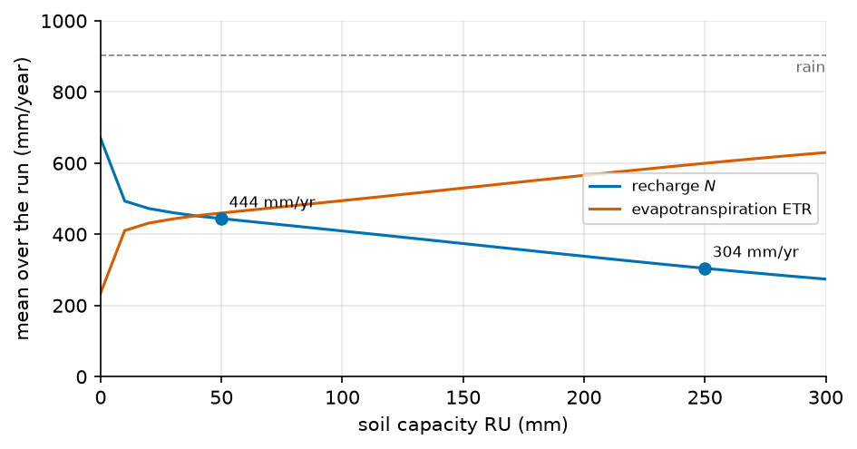

The daily soil reservoir#
The soil reservoir turns the daily rain and ETP of a grid into the recharge of a MODFLOW 6
run. It is a water balance with one store per column. The store fills with the rain, loses
water to the plants, and sends down what exceeds its capacity. This page gives the equations
of hydromodpy/model/soil/kernel.py, what they assume and what they
leave out. Only MODFLOW 6 accepts the reservoir, so a file that declares
flow.sinks_sources.recharge.soil with another solver is refused. The reference page of
that section lists every key a run sets.
The water path#
Notation of this page
Every column of the reservoir is independent, so the column index is left out. \(t\) is the day. Stores are in mm of water per unit of unsealed area, and fluxes in mm/day. Every symbol of the site is on Notation.
Symbol |
Meaning |
Unit |
Set by |
|---|---|---|---|
\(t\) |
time; on the soil page, the day |
s |
|
\(N\) |
recharge rate, positive into the aquifer |
m/s |
|
\(P_t\) |
rain of day \(t\) |
mm/day |
|
\(E_t\) |
ETP of day \(t\), as loaded |
mm/day |
|
\(\mathrm{RU}\) |
capacity of the soil store |
mm |
|
\(\alpha\) |
share of RU above which evaporation is not limited |
||
\(k_c\) |
factor applied to the loaded ETP |
||
\(f\) |
sealed share of the area |
||
\(b\) |
share of the rain that skips the soil |
||
\(\tau\) |
time constant of the transit store |
day |
|
\(\mathrm{CN}\) |
SCS curve number |
||
\(\tau_q\) |
time constant of the curve-number runoff store |
day |
|
\(L\) |
pure delay of the curve-number runoff |
day |
|
\(S_t, R_t, C_t\) |
soil, transit and curve-number stores at the end of day \(t\) |
mm |
state, not a key |
\(Q_t\) |
curve-number runoff of day \(t\) |
mm/day |
derived |
\(O_t\) |
water that reaches the water table, per unit of unsealed area |
mm/day |
derived |
\(w_t\) |
wetness of the soil the day before, a share of RU |
derived |
|
\(\sigma_t\) |
SCS retention of day \(t\) |
mm |
derived |
\(B_t\) |
rain that skips the soil on day \(t\) |
mm/day |
derived |
\(W_t\) |
water in the soil after the rain, before any evaporation |
mm |
derived |
\(\psi_t\) |
evaporation stress, the share of \(k_c E_t\) the soil can meet |
derived |
|
\(\mathrm{ETR}_t\) |
evapotranspiration of the soil on day \(t\) |
mm/day |
derived |
\(X_t, I_t\) |
overflow of the soil, and inflow of the transit store (\(X_t + B_t\)) |
mm/day |
derived |
\(Q^r_t, Q^L_t\) |
curve-number runoff after its store, and after its delay |
mm/day |
derived |
The daily balance#
With the default values, a day has three steps. The rain reaches the soil first, so the water in the soil before any evaporation is
where \(S_{t-1}\) is the store at the end of the day before. The soil evaporates at the full rate \(k_c E_t\) while it holds more than \(\alpha\,\mathrm{RU}\). Below that level the rate falls linearly with the store, and it can never exceed what the soil holds. The evapotranspiration reads
with \(\psi_t = 1\) if \(\mathrm{RU} = 0\). The water above the capacity leaves the soil, and the rest stays for the next day:
With the default values, this overflow \(X_t\) is the recharge \(N_t\) of MODFLOW 6. The demand the soil could not meet, \(k_c E_t - \mathrm{ETR}_t\), is offered to the water table (Where the results go).
The capacity ru is the water the roots can draw. It
belongs to the site, so it has no default. The soil map of Brittany gives 100 to 200 mm on
schist and granite [Berthier, 2013], and Dewandel and others [2020] take 125 mm on the
catchment of example 04.
The share alpha sets when the plants begin to
close their stomata. It is the \(1 - p\) of FAO-56 [Allen et al., 1998] and the \(LP\) of HBV
[Seibert and Vis, 2012], and Manabe [1969] has the same form with 0.75. The default 0.45 is
our choice. It means \(p = 0.55\), the value of table 22 of FAO-56 for cereals and maize, with
0.60 for pasture.
The factor kc scales the loaded ETP. The value 1
assumes that the surface of this ETP looks like the site. The attribute dictionaries of SIM2
label its ETP Penman-Monteith, but we found no primary text of Météo-France that gives its
reference surface.
How much recharge, by capacity#
The capacity moves the recharge more than any other parameter. A larger store keeps more of the winter rain for the summer, when the plants take it back.

Fig. 17 Recharge and evapotranspiration against \(\mathrm{RU}\), from
spinup_state and run_soil_balance on a synthetic six-year climate
(904 mm of rain and 698 mm of ETP per year, the other keys at their
defaults). The two curves sum to the rain over the run.#
Example 04 prints the same ladder on the SIM2 rain and ETP of 2015 to 2020 over its catchment:
\(\mathrm{RU}\) (mm) |
50 |
100 |
150 |
200 |
250 |
|---|---|---|---|---|---|
Recharge (mm/year) |
443 |
389 |
350 |
315 |
280 |
Over the same days the rain is 911 mm/year, the ETP 693 mm/year and the gauged discharge 327 mm/year. So the discharge alone does not fix the capacity.
What the recharge represents#
With the default values the reservoir has no runoff term. All the water above RU goes to the water table, so this recharge is an effective rain. Its counterpart in SIM2 is the drainage plus the runoff, DRAINC + RUNC. On the catchment of example 04, from October 1985 to July 2015, the reservoir gives 308 mm/year and SIM2 gives 243 + 79 = 322 mm/year.
MODFLOW 6 then splits this water. Where the water table reaches the drain elevation, the water leaves through the drain in the same period. Elsewhere it passes through the aquifer. So the split between quick and slow flow comes from the aquifer parameters and the drains. On example 04 at the daily step, 2016 to 2020, with K = 3.16e-5 m/s and Sy = 0.04, the filter of Lyne and Hollick (0.925, three passes) gives a baseflow index of 0.69 for the run and 0.67 for the gauge. Across K from 1e-7 to 1e-4 m/s and Sy from 0.02 to 0.08, the index of the run goes from 0.03 to 0.81. Dewandel and others [2020] impose the split at the surface instead, with 55 % of the effective rain going to the aquifer on hard rock. Their share and this index are different quantities, so the comparison says nothing of the path of the water.
A strong rain on a dry soil gives no quick flow in this model, because the soil takes it and the plants use it later.
The optional terms#
In the code, a day runs the curve number, then the bypass, the evaporation and the overflow, the transit, and at the end the routing and the delay of the runoff. The sealed share changes the area that all of them apply to.
Curve number#
A part of the rain runs off before it reaches the soil. The key
curve_number starts this term, with a value
between 30 and 98. The runoff is the SCS formula of HELP [Schroeder and others, 1994], eq. 21, and
NEH-630 [USDA Natural Resources Conservation Service, 2004], eq. 10-1:
The retention \(\sigma_t\), in mm, depends on the wetness of the soil the day before,
It moves linearly with \(w_t\), from the retention of the dry number at \(w_t = 0\) to the retention of the wet number at \(w_t = 1\). The file gives the class II number. The code derives \(\mathrm{CN}_I = 4.2\,\mathrm{CN} / (10 - 0.058\,\mathrm{CN})\) and \(\mathrm{CN}_{III} = 23\,\mathrm{CN} / (10 + 0.13\,\mathrm{CN})\), a fit about one number from table 10-1 of NEH-630, and a number gives the retention \(25400 / \mathrm{CN} - 254\). The straight line is our choice. HELP uses other bounds [Schroeder and others, 1994], and SWAT uses a curve that adds 2.54 mm at saturation [Neitsch et al., 2011]. The ratio 0.2 stays because the tables of numbers were built with it, although measured ratios are far lower [Hawkins et al., 2002].
The retention is no store, because no water sits in it and the balance never counts it. NEH-630 warns against reading it as the storage of the soil [USDA Natural Resources Conservation Service, 2004], p. 10-5. The term reads the soil and never the water table, so it renders saturation runoff badly. The drains of MODFLOW 6 already give that runoff and the term can count it twice, so it stays off by default.
Bypass#
Water can reach the water table through cracks, root channels and worm holes without wetting the
soil. The key bypass_fraction gives this
flow as a constant share \(b\) of the rain that infiltrates:
The share stays the same in every season and every storm, and real preferential flow does not. A calibrated bypass often stands in for the slow drainage that this store does not have [Ireson and Butler, 2013]. On the rain and ETP of example 04, 2015 to 2020, shares of 0.1 and 0.2 give 0.18 and 0.36 mm/day of recharge from July to September, for 0.000 without a bypass. So a bypass rebuilds a summer floor, and it stays at 0 unless the site shows preferential flow.
Infiltration ratio#
The key infiltration_ratio gives the
share \(r\) of the water leaving the soil that goes on to the aquifer, the ratio of infiltration of
the effective rainfall (RIPE) of ESPERE [Lanini et al., 2016]. The rest runs off on the same day,
beside the sealed share and the curve number, so the inflow of the transit store and the quick
runoff read
With \(r = 1\), the default, all of it reaches the aquifer and the drains of MODFLOW give back what
saturates, bit for bit as before. ESPERE v2 proposes the lowest yearly baseflow index of the
Wallingford filter on the gauge, after Caballero et al. (2020, BRGM/RP-69217-FR). The soil budget
of hmp run --until load_data prints that value when a gauge is loaded, and the user copies it,
since the gauge the run is scored on never sets the model by itself. On the Nancon over 2015 to
2020 the lowest index is 0.70. With it the recharge falls from 421 to 295 mm/year and 126 mm/year
runs off. The pbias of the discharge moves from 20.5 % to 22.1 %, so the quick runoff reaches the
gauge, and the ru that closes the budget does not move, because the gauge sees recharge and runoff
together.
Transit through the unsaturated zone#
The water can take time to cross the unsaturated zone. The key
transit_time sets the time constant \(\tau\)
of one linear reservoir, whose outflow is \(R/\tau\). The inflow \(I_t = X_t + B_t\) is constant over
the day and the code integrates the reservoir exactly:
where \(O_t\) is the water that reaches the water table. A pulse leaves as a falling exponential, and \(\tau = 0\) gives \(O_t = I_t\). The limit of 30 days leaves the slow response to MODFLOW 6. One constant applies to the whole catchment, whatever the depth of the water table.
On example 04, 2016 to 2020, with K = 3.16e-5 m/s and Sy = 0.04, a delay of 5 days raises the NSE of the daily discharge from 0.58 to 0.79 and moves the July to September bias from -0.002 to +0.007 m3/s. A delay of 30 days, run at the monthly step, brings that bias from -0.007 to +0.050 m3/s, so the summer floor comes back.
Routing and delay of the runoff#
The curve-number runoff goes through the same reservoir, with the time constant \(\tau_q\) of
runoff_time and its own store \(C_t\). The
routed runoff is \(Q^r_t\), and \(\tau_q = 0\) gives \(Q^r_t = Q_t\). A pure delay of \(L\) days,
runoff_lag, follows. With \(L = n + \varphi\),
where \(n\) is a whole number of days and \(0 \le \varphi < 1\), the delayed runoff reads
Both keys are read only with a curve number. They move the runoff in time and keep its volume,
apart from the part pushed beyond the last day of the run. A day before the first day reads zero,
or, with spinup = "first_year", the end of the last repeated year.
Three days, by hand#
The numbers below come from one call of soil_step for each day, with
\(\mathrm{RU} = 150\) mm, \(\alpha = 0.45\), \(k_c = 1\) and \(f = b = \tau = 0\). The last day adds a
curve number of 80 with \(\tau_q = 0\). Its store is full, so \(w = 1\) and \(\sigma\) is the retention
of the wet number, \(\mathrm{CN}_\mathrm{III} = 90.2\).
Dry day |
Overflow |
Curve number |
|
|---|---|---|---|
\(S_{t-1}\) (mm) |
40 |
145 |
150 |
\(P_t\), \(E_t\) (mm/day) |
0, 4 |
30, 3 |
30, 3 |
What happens |
\(W = 40\) is below \(\alpha\,\mathrm{RU} = 67.5\), so \(\psi = 0.593\) |
\(W = 175\), evaporation 3, \(175 - 3 - 150 = 22\) leaves |
\(w = 1\), \(\sigma = 27.6\), \(Q = 11.50\), then \(W = 168.50\) |
ETR (mm/day) |
2.37 |
3.00 |
3.00 |
Recharge \(N_t\) (mm/day) |
0 |
22.00 |
15.50 |
Runoff (mm/day) |
0 |
0 |
11.50 |
\(S_t\) (mm) |
37.63 |
150 |
150 |
Residual ETP (mm/day) |
1.63 |
0 |
0 |
The balance closes#
Over any run, per column and per day,
where \(\Lambda_t\) is the running total of runoff held back by the delay. The function
balance_residual computes the difference between the two sides. On 400 days of random rain and
ETP over three columns, with all the options on, the largest residual is under \(10^{-13}\) mm.
The starting state#
With spinup = "none", the soil starts full and the other stores empty. With
spinup = "first_year", the default, the first 365 days run again and again from that full soil,
until no store moves by 0.1 mm or more over one repetition. The run stops with an error if 20
repetitions are not enough. A run shorter than 52 weeks is refused with this option, and a run of
364 days repeats those 364 days.
The soil and the aquifer each get a starting state, and the two are computed apart. The soil settles on
its first year. If flow.ic.h.kind of the aquifer is spinup_cyclic, the aquifer settles on
cycles of the whole period, with the recharge the soil gave on that period. The soil state at the
start of the run is the one of the first year, and the heads at the start of the run are the ones of
the cycled period. The two states come from two windows of the same forcing, and no step makes them
agree. The file is accepted without a warning, because this is sometimes what is wanted: a soil that
needs one year to fill, and an aquifer that needs the mean of many years to reach its yearly cycle.
A modeller who wants both states of one window runs hmp spinup over that window and starts from its
result with flow.restart_from.
Under simulation.time.window_length the reservoir still runs on the whole simulation, from its
starting state, and each window takes its own periods of that run. final_state/ keeps no soil
state. This is possible because the reservoir never reads a head (Limits), so the soil
of a window does not depend on the aquifer. The warm-up reads the first 365 days of the series, and
the three stores and the runoff of the days before day 0 would have to be written and read again
to give anything better. The windows of a chain share one soil product, computed once.
Columns and capacity classes#
Without data.soil_capacity, each cell of the rain and ETP grid is one column with the same
RU. With it, the pixels of the raster in each cell are sorted by capacity and cut into ten classes
of equal pixel count. Each class is a column of capacity
\(\mathrm{RU} \times (\text{class mean} / \text{raster mean})\), so the value in the file stays the
mean capacity and the raster only spreads it. A capacity spread below the cell belongs to the
family of Moore [2007], and these classes are our choice. The basin value of a flux gives
each cell its share of the catchment, or the same weight without a catchment polygon.
data.impervious, data.curve_number and data.infiltration_ratio give the
sealed share, the curve number and the infiltration ratio as rasters. Each cell takes the mean of the pixels that lie inside the catchment, so a town beside
the catchment does not seal it, and every column of the cell reads that mean in place of
impervious_fraction or
curve_number. A cell the catchment does not reach takes the catchment
mean. The sealed share comes from OCS GE of the IGN over France, its built and unbuilt sealed covers
burnt on a 10 m grid, or from the built-up class of ESA WorldCover over the world, or from a file.
On the Nancon, OCS GE 2023 gives 3.95 % sealed and WorldCover 2021 gives 2.39 %, because a road
narrower than a 10 m pixel falls in the field beside it. The curve number comes from a file, such
as the GCN250 map of Jaafar et al. [2019], or from a land cover. Then each class goes to one
class of the ESA CCI legend, and the curve number is the row of GCN250 for that class and the
hydrologic soil group, a letter or a HYSOGs250m map [Ross et al., 2018] written in the section.
The ESA CCI legend is the pivot because GCN250 is the only published bridge from a land cover
legend to the curve number, and no correspondence between OCS GE, Corine Land Cover and WorldCover
is official. So every class points to one published row and no row is a mean of ours. The
crosswalks of OCS GE, Corine Land Cover and WorldCover are our choice, written beside each class,
and the section may override any row or describe a legend of its own. Managed meadows read the
managed grass row (75 on group C), not grassland (81), which GCN250 builds with 40 % bare soil.
Sealed and built-up classes stay out of the map, since the sealed share runs them off whole, and
so do water and snow, which have no curve number. On the Nancon with group C, OCS GE 2023 gives a
basin mean of 74.2 and WorldCover 2021 76.8, while the GCN250 map, on its own soil groups, gives
78.5. The tables of the curve number come from small American catchments and storms of a day, so
on a catchment where the water table makes the runoff the value is a relative index of the
surface, to calibrate, more than a law. The mean of a cell is its composite curve number, and
the SCS law is not linear, so it runs off a little less than its pixels would one by one. The
infiltration ratio comes from a file or from OCS GE, where the section writes one ratio for each
cover, keyed by its code or the start of one. HydroModPy ships no value per cover, because no
published table fits every site. The sealed covers stay out of that map, since the sealed share
runs them off whole, so a cell averages the ratio over its unsealed ground.
Where the pieces come from#
The threshold balance and its overflow are the soil budget of Thornthwaite and Mather [1957], which also gives a daily procedure and a start from a repeated year. SWB2 [Westenbroek et al., 2018] has the same order within a day and the same overflow, but it first takes a runoff from the rain. GSFLOW [Markstrom et al., 2008] is the closest published chain, with a daily threshold soil, a preferential flow, a delay and the unused ETP passed to MODFLOW. It differs by its saturation runoff and its feedback from the water table. We found no published model with this whole assembly, and the search was not a systematic review.
Assumptions#
The rain and the ETP are constant over the day.
The rain falls before the soil evaporates, so the stress of a day reads the store after the rain.
The curve number reads the wetness of the day before.
Columns do not exchange water.
One value of \(\alpha\), \(k_c\), \(f\), \(b\), \(\tau\), CN, \(\tau_q\) and \(L\) holds for the catchment and the run.
Snow counts as rain on the day it falls, and the file is refused unless
components = ["total"].
Limits#
The soil never reads the water table, so a shallow water table does not reduce the capacity.
The drainage stops at RU, where a real soil keeps draining slowly.
The rain and the ETP need one value per day and per cell, with no gap and no negative value, on a standard calendar, on one grid, in the CRS of the model.
A steady first stress period is refused, because it would hold the recharge of one day only.
The SIM2 drainage jumps from 0.000 to 0.300 mm/day on 31 July 2015 over the catchment of example 04, so compare a recharge with it period by period. Le Moigne et al. [2020] do not explain this step.
Where the results go#
The reservoir hands three daily grids to the rest of the run, in mm/day on the cells of the rain grid.
The recharge goes to the MODFLOW 6 recharge package. A file that also loads a recharge through
data.types is refused.
The residual ETP goes to the MODFLOW 6 evapotranspiration package, which draws it from the water
table. This needs a [flow.sinks_sources.etp] table. The rate falls linearly to zero at
extinction_depth below the drain elevation of the
cell. The default of 2 m is our choice, and this depth matters for the low flows. On example 04,
from 1 m to 2 m, the July to September bias of the discharge goes from +0.009 to -0.007 m3/s and the
lowest monthly flow of 2019 from 0.167 to 0.147 m3/s, for 0.153 gauged.
The runoff goes where a loaded runoff would go, to the stream networks, the lakes and the discharge
that a calibration compares with the gauge. A file that also loads a runoff through
data.types is refused, because the same water would count twice.
Four storage laws#
The method names the law that shares the water
of the day between ETR, the store and the overflow. Everything around it stays the same. The
sealed share, the curve number, the bypass, the transit and the snow work the same way under
every law, and every law closes the balance \(W_t = \mathrm{ETR}_t + S_t + X_t\).
fao56, the default, is the law above. thornthwaite (Thornthwaite 1948) meets the full
demand while water is left, \(\mathrm{ETR}_t = \min(W_t, k_c E_t)\). It is fao56 with no stress
line, the limit \(\alpha \to 0\). dingman (Dingman 2008) meets the full demand on a wet day. On
a day with less water in than \(k_c E_t\), it empties the store as an exponential of the deficit,
edijatno_michel is the production store of GR4J (Edijatno and Michel 1989, Perrin et al.
2003) without its percolation. On a wet day with net rain \(P_n = P_t - k_c E_t\), the store
fills by
so part of the rain leaves before the store is full. On a dry day the store empties by the
matching \(\tanh\) form and nothing leaves. These three laws follow ESPERE (BRGM report
RP-69538-FR) except on one point. ESPERE tests the wet branch of edijatno_michel on the ETP
without \(k_c\), which breaks the balance when \(k_c \neq 1\). Here the test reads the demand
\(k_c E_t\).
Only fao56 reads alpha. A file that writes it
beside another law is refused, and so is a calibration that searches it.
Snow and a seasonal crop coefficient#
A snow table turns on a snow pack, read from the
daily mean temperature of [data.temperature]. The melt factor \(f\) goes linearly from 0 at
melt_start to 1 at melt_full, 0 and 6 °C by default, as in ESPERE. A share \(1 - f\) of the
day’s precipitation falls as snow, and a share \(f\) of the pack plus that snow melts. The pack is
a store of its own, so it enters the balance and the table soil_budget.
The factor kc may also be a table {low, high, months}. It is low outside the growing
season, rises linearly to high from planting to full cover, holds it, and falls back at
harvest. Each of the four months starts its change on its first day, and a winter crop wraps
over the new year. A calibration can search kc only when it is a number.
The capacity that closes the budget#
Over several years, the water that leaves the soil, recharge plus runoff, has to match the gauged discharge, give or take the storage of the aquifer and its own evaporation. The recharge falls when \(\mathrm{RU}\) grows, so one capacity closes that budget. When a gauge is loaded at the outlet, the run finds it by bisection on the soil alone and prints it under the budget block, with three numbers that say how firm it is:
the range of the answer when the years are drawn again at random, 5 to 95 %;
the answer with the rain, then the gauge, 5 % lower or higher;
the change for 10 mm/year of evaporation by the water table.
The value is an effective capacity, since a bias of the rain moves it as much as the range of
the soils of Brittany. Writing it as ru and calibrating K and Sy with it fixed separates the
volume, which the budget sets, from the dynamics, which the heads and the hydrograph set. Only
the calendar years the gauge covers on 90 % of their days count. The run keeps the numbers as
attributes of forcing/soil (ru_closing_budget_mm and its band). A calibration phase with
regime = "soil" does the same search and freezes the value for the phases after it
(Write calibration phases).
Parameters of this page#
The fields below are the ones that appear in the equations. Open a row for its card.
A soil section with every key and a curve number. Its keys link to their card. A run that
declares it also reads the rain and the ETP in [data], and no recharge.
1# not checked: the section alone, without the rain and the ETP it reads 2[flow.sinks_sources.recharge.soil] 3ru = "150 mm" 4alpha = 0.45 5kc = 1.0 6impervious_fraction = 0.0 7bypass_fraction = 0.0 8transit_time = "3 days" 9curve_number = 78 10runoff_time = "1 day" 11runoff_lag = "0.5 days" 12spinup = "first_year"
Checked by#
The tests that import the code of this page. The box is generated, so a new test appears here on the next build.
21 test files import hydromodpy.model.soil.kernel, hydromodpy.model.soil.laws, hydromodpy.model.forcing.soil_ru_budget, hydromodpy.model.forcing.soil_budget, hydromodpy.model.forcing.soil_columns, hydromodpy.model.forcing.soil_config, hydromodpy.model.forcing.soil_forcing, hydromodpy.model.forcing.soil_grids. Their names say what they check.
validation: 1
integration: 1
- Soil recharge mf6.
unit: 19
- Parameter resolution. calibration
- Targets. calibration
- Cross checks. config
- Field metadata. config
- The soil reservoir snippet validates. docs
- Recharge estimates. model/forcing
- Soil budget. model/forcing
- Soil columns. model/forcing
- Soil config. model/forcing
- Soil forcing. model/forcing
- Soil forcing inputs. model/forcing
- Soil ru budget. model/forcing
- Soil stored. model/forcing
- Kernel. model/soil
- Laws. model/soil
- Flow. model
- Supports. model
- Forcings. workflow/steps/prepare_solver
- Data. workflow/steps
In the code#
What |
Where |
|---|---|
The daily step and the balance |
|
The four storage laws |
|
Snow and the seasonal kc |
|
The capacity that closes the budget |
|
The starting state |
the same file, |
What a file may say, and its ranges |
|
Grids in, columns, grids out |
|
See also#
flow.sinks_sources.recharge.soil: the section as a reference page.Theory: the other theory pages.